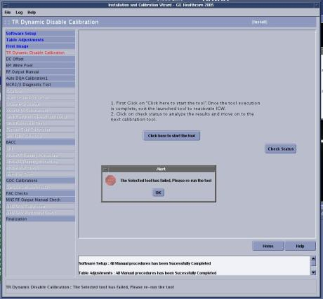

If a task is incomplete or a calibration fails, the interface will turn the name of that task/calibration red and a “The selected test has failed. Please re-run the tool.” message will appear. Post dependencies will not become available until the task/calibration passes. (See Illustration 6.)
Illustration 6: Tool Failure
